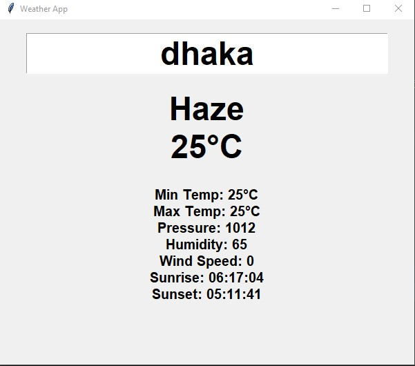

Weather App
The weather app gives information about a certain city based on the user's input. For a better user interface, we
used Tkinter.
To access the data, we used the Open Weather API. We got a decent understanding of how API works
by building this project
Technologies:
- - Python
- - Tkinter
- - Weather API